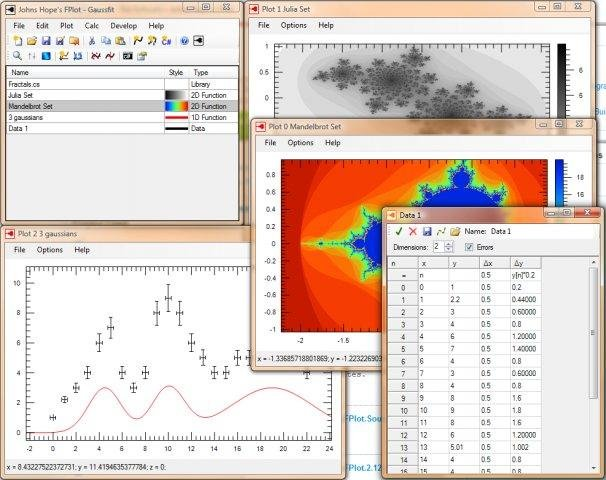

Johns Hope’s FPlot. A fast & flexible Software to Plot and Fit functions and data for Windows. FPlot is flexible & fast, in that you can express your functions with C#, and FPlot compiles them on the fly. You can also reference numerical C# libraries. That way you can express any function, no matter how complicated.
Johns Hope’s FPlot is OpenSource and available on GitHub, it is distributed with a MIT license. It also has a Library that you can use to embed plots in WinForms or ASP.NET WebForms.
If you like Johns Hope’s FPlot, and it helped you save a lot of work, please consider to donate to us with PayPal.
